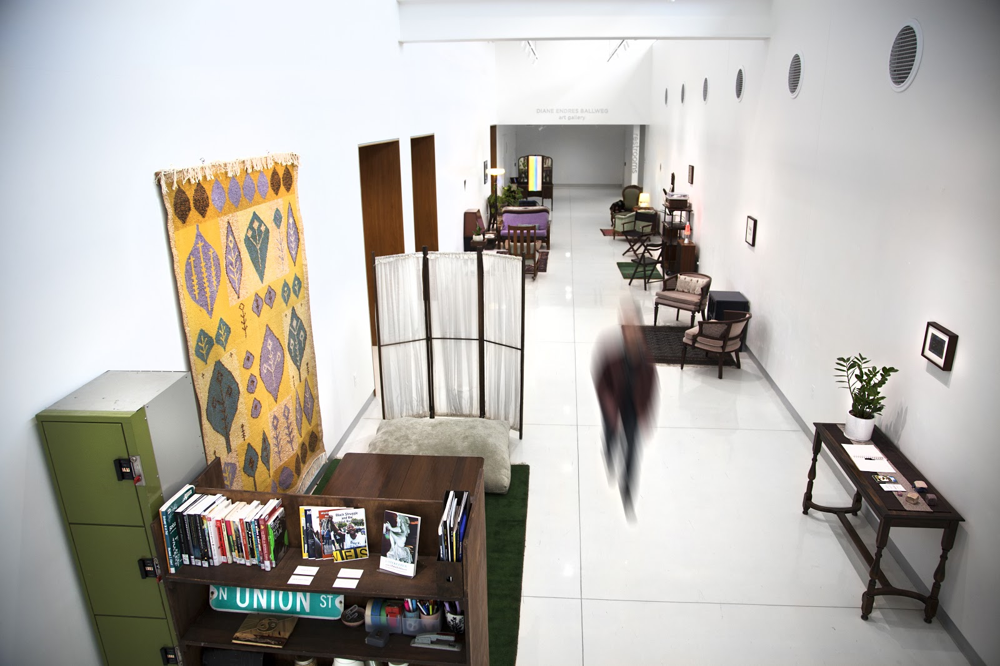

Solarpunk Surf Club is an arts collective who create and curate egalitarian platforms for surfing the waves of still-possible worlds.
Græn R∞m is a public living room for utopian (re)creation. Guests are invited to read, rest, play, and socialize in a cozy, communal environment.
The project takes its name from three different concepts of ‘the green room.’
| 1 | 2 | 3 |
| In theater, music, and entertainment: a space to relax and socialize backstage; a room for artists and guests to prepare before, and retire after, a performance. | In the White House: an artfully decorated state parlor used for intimate receptions and tea ceremonies. | In surfing parlance: the sublime yet precarious space inside the barrel of a breaking wave. |
